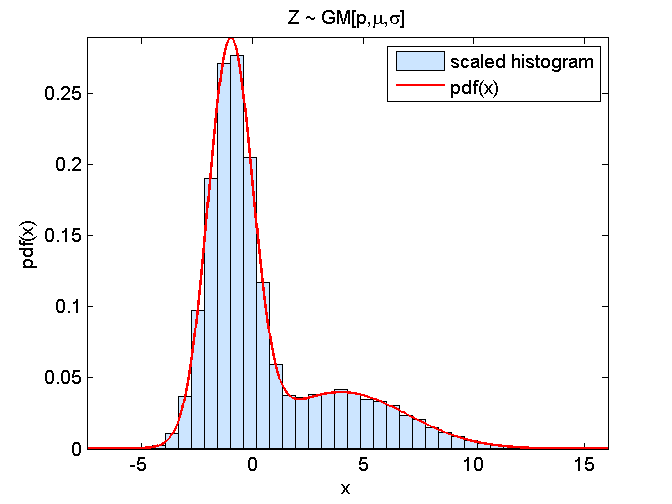

Contents
- demo_GaussianMixture2_randomNumberGenerator: generate GM[p,mu1,sigma1,mu2,sigma2] random numbers
- Sample matrix (M rows, N columns)
- Parameters for the generator
- Simulate a matrix (M rows, N columns) of Bernoulli[p] random numbers
- Simulate a matrix (M rows, N columns) of GM[p,mu1,sigma1,mu2,sigma2] random numbers
- Compare modelPdf and scaled histogram
function demo_GaussianMixture2_randomNumberGenerator
demo_GaussianMixture2_randomNumberGenerator: generate GM[p,mu1,sigma1,mu2,sigma2] random numbers
Sample matrix (M rows, N columns)
M = 1000;
N = 100;
Parameters for the generator
p = 0.7;
mu1 = -1.0;
sigma1 = 1.0;
mu2 = 4.0;
sigma2 = 3.0;
Simulate a matrix (M rows, N columns) of Bernoulli[p] random numbers
xi = (rand(M,N) < p);
Simulate a matrix (M rows, N columns) of GM[p,mu1,sigma1,mu2,sigma2] random numbers
Z = randn(M,N);
Z(xi) = mu1+sigma1*Z(xi);
Z(~xi) = mu2+sigma2*Z(~xi);
Compare modelPdf and scaled histogram
modelPdf = @(z)(GMpdf(z,[p 1-p],[mu1 mu2],[sigma1 sigma2]));
figure(1); graphicalComparisonPdf(Z(:),modelPdf)
title('Z ~ GM[p,\mu,\sigma]')
